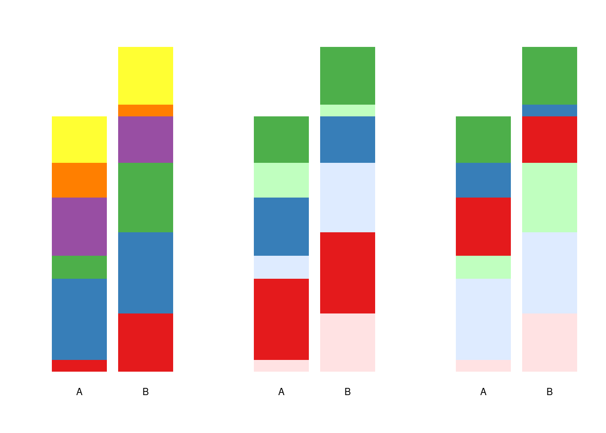
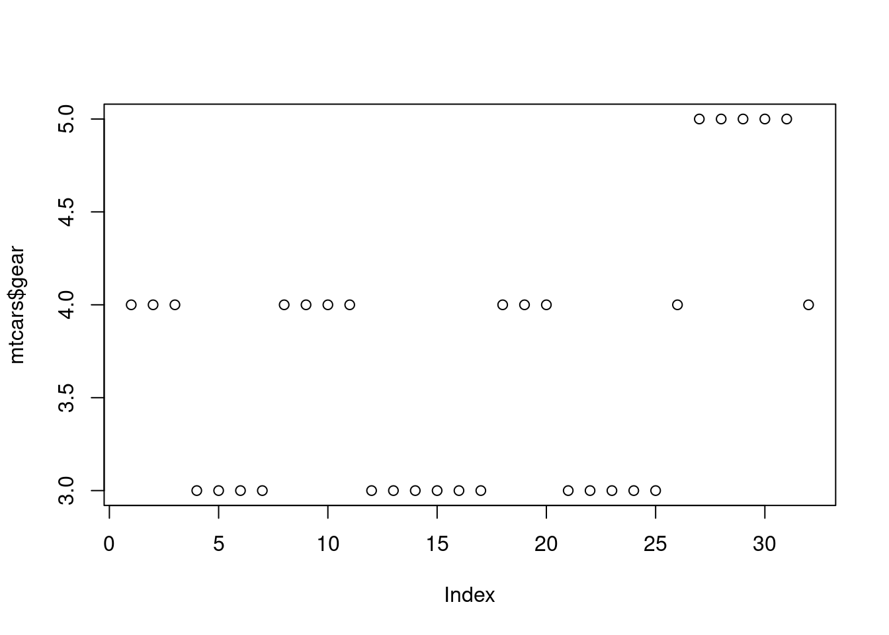

| Term | Definition | Examples |
|---|---|---|
| Visual scene | The entirety of the visual information presented to the user as a coherent unit. Can consist of elements such as: plots, tables, auxiliary elements (e.g. title, explanatory text), interactive widgets (e.g. slider, drop-down menu). | A single static scatterplot, an interactive scatterplot matrix with linked brushing, a complex dashboard. |
| Visual display | The graphical aspect of the visual information presented to the user. Concerns various graphical elements such as colour, length, area, motion/speed. | A single realization of a (possibly interactive) visual scene, with a specific color scheme, size of graphical primitives, etc..., presented on a computer screen. |
Draft
Interactive visualization is mainly used for communication, not exploration (Batch and Elmqvist 2017)
What even is interactivity?
Despite the popularity of interactive data visualization, researchers seem to have many different ideas as to what it means for a visualization to be “interactive”. For example, Pike et al. (2009) note that “interaction” is an overloaded term that can either refer to the concrete tools that users can use to manipulate the visualization, or to the more abstract “human interaction with information” - the back-and-forth between the user’s cognition and the visual information presented to them (see also Yi et al. 2007). For others, the key measure of interactivity is lag between the user’s input and changes to the visualization, with less lag meaning more interactivity (Becker and Cleveland 1987; Buja, Cook, and Swayne 1996), and some make the distinction between “interactive” and “dynamic” manipulation, where interactive manipulation induces change discretely such as by pressing a button or selecting an item from a menu to render a new display, whereas dynamic manipulation induces a real-time, continuous change, for example by smoothly moving a slider or by clicking-and-dragging (Rheingans 2002; Jankun-Kelly, Ma, and Gertz 2007). Yet for others, the defining features are the ability to query different parts of the dataset (by e.g. zooming and filtering) and that the interactions propagate between “linked” parts of the visualization, for example by brushing points on a scatterplot within a linked scatterplot matrix Keim (2002). Similarly, in Visual Analytics (VA) research, distinction is made between surface-level and parametric interactions, where surface-level interactions manipulate attributes of the visual domain only (e.g. zooming, panning, highlighting), whereas parametric interactions manipulate attributes of mathematical models underlying the visualization (Leman et al. 2013). Put simply, the terms “interaction”, “interactive”, and “interactivity” mean a lot of different things to a lot of different people.
Below, in Table 2, I have attempted to summarize the main types of interactivity in data visualizations. This list is not supposed to be exhaustive as many more complete and detailed taxonomies of interactive visualizations have been described (see Yi et al. 2007). Instead, the point of this list is to provide a rough sketch of the space interactive visualizations live in:
| Type | Short definition | Details |
|---|---|---|
| Basic | Change happens at all | The user has the ability to manipulate some graphical attributes of the visual display. |
| Temporal | Change happens “in real-time” | The user’s input produces changes to the visual display fluidly, with little lag, real-time change is sometimes called dynamic. |
| Linked | Change propagates | Parts of the visual display are linked together and "communicate", i.e. the user's interaction with one plot produces a change in another plot (e.g. linked brushing) |
| Parametric | Change affects underlying models | The user can manipulate the underlying mathematical structure behind the visual display, not just its surface-level graphical attributes |
| (Cognitive) | Change is perceived by a human | There is a back-and-forth between the visual information displayed and the user's perception, cognition, insights, etc... |
Using the term “interactive” to cover such a wide range of diverse concepts makes it difficult to clearly classify visualizations. For example, should a single scatterplot in which the user can drag a brush to highlight some points be considered “interactive”? Under the most basic definition, yes, since the user can affect the visual display through interaction. However, under such an expansive definition, even the process of writing-and-running code to produce a new or altered plot could be considered an exercise in interactive visualization. In contrast, the scatterplot would clearly fail to meet the linked and parametric definitions of interactivity, since with a single plot there’s nowhere for the changes to propagate to, and changing the color of individual points can hardly be considered a change to a mathematical model. This highlights the fact that the linked and parametric definitions are quite restrictive, and many visualizations that are currently being called “interactive” would fail to meet them. As for the temporal definition, this is met if we assume the user interaction happens smoothly enough. However, what if the volume of the displayed data is very high and the user has to wait several second before the result of the brushing is rendered? Does the plot stop being interactive (or dynamic) as the result of limited computational resources? Finally, is the plot interactive in the cognitive sense? Perhaps so, if it can help the user generate new insights, however that debatable in light of the limited functionality it has over a static plot. Thus, even with such a simple example, it becomes difficult to determine whether we should label such a plot “interactive” or not.
The conceptual ambiguity about what “interactivity” is propagates to the software implementations. For example, the R Graph Gallery entry on Interactive Charts (Holtz 2022) features several example plots which allow for surface-level user interactions such zooming, panning, hovering, 3D rotation, and node repositioning within a network graph. Crucially, in all of the examples, the user interacts with a single plot and can affect graphical attributes of the plot only, and so these visualizations would not meet the communicating and parametric definitions of interactivity. In contrast, the Plotly Dash documentation page on Interactive Visualizations (Plotly Inc. 2022) features examples of linked hovering and cross-filtering, i.e. examples of communicating and parametric interactivity. Somewhat differently again, VegaLite Gallery pages on Interactive Charts and Interactive Multiview Displays (Vega Project 2022) feature many examples, only few of which meet the communicating and parametric definitions.
The term “interactive” is very loaded. Clearly, it would not be possible to disambiguate the many different definitions. However, to clear up at least some of the confusion, I propose to use the term communicating to refer to visualizations that meet the change propagation definition outlined above. A communicating visualization is one whose plots share an underlying representation of the data and communicate together in response to the user’s interaction (here used in the essential sense).
Principled interactivity
In his seminal work, Tufte (2001) laid out his principles for effective data visualization.
Tufte (2001) introduced the term chartjunk to refer to redundant elements of a plot that do not add anything to the user’s ability to extract meaningful patterns from the data, or worse may even outright distract, confuse, or create visual clutter. Tufte went on to document many different types of chartjunk, such as overly aggressive grid-lines, superfluous 3D perspectives, and unintended optical illusions. He also used the term ducks to refer to cases when the informative function of a visualization is forcefully subordinated to the aesthetic form. In other words, to cases where the artistics design, real or imagined, is elevated and the data takes a back-seat.
There is even greater potential for ducks and chartjunk to appear in interactive visualizations. First of all, user’s interaction can produce abrupt changes to the visual scene and these can be even more attention-grabbing and distracting than any element of a static plot. In cognitive research, it is well-known that visual stimuli are initially perceived pre-attentively and compete for attention (see e.g. Carrasco 2011; Treue 2003). Whichever stimulus is found to be the most salient is then perceived consciously. As such, rapid changes to the visual stimulus can compete for the user’s attention and become distracting, especially if they were not committed intentionally.
A specific example of an interactive chartjunk or interactjunk may be the overuse of a pop-up tooltips that appears whenever user hovers over a points on a scatterplot. Dragging a cursor over a part of the plot where many such points are located close together will make many tooltips pop in and out of existence and produce a distracting visual clutter. The value of this feature for graphical inference is questionable. Querying individual points can be valuable, such as when learning about outliers and otherwise unusual datapoints, however, these are, by definition, few and far apart. Most datapoints do not need to be queried, since they reveal information jointly, as part of a larger pattern. Put simply, we seldom need information about a specific Joe who is average, but information about the Average Joe may be interesting. Conversely, information about a specific Exceptional Steve may be interesting too, but there are few Exceptional Steves, otherwise they would not be exceptional. For these reasons, having a tooltip appear on hover by default seems like a bad feature design. Instead, the appearance of the tooltip should result from an intentional action by the user, such as by clicking the queried point while simultaneously holding down a specific key.
Moreover, tooltip-on-hover also has the hallmarks of an interactive duck: it is immediate, attention-grabbing, and unavoidable. It signals to the user “this is an interactive plot alright”.
Finally, a question immediately presents itself: “does interaction allow the user to see some patterns in the data clearer or faster?” If not, there is no advantage over static visualization.
| Name | Description |
|---|---|
| Interact with plots, not knobs | The user should be able to perform all desired interaction via manipulating graphical objects inside plots and external widgets should not be necessary. E.g. instead of selecting from a drop-down menu, the user should be able to select a category by clicking a bar in a bargraph. |
| Consistent and predictable results | The user’s interaction should produce consistent and predictable results across different types of plots. E.g. if pressing a specific key affects the size of graphical objects in one plot, it should do the same in another plot & not something different. |
| See everything, everywhere, all at once | The user should be able to see the results of their present interaction immediately, reminders of past interaction should remain visible, especially conditioning interactions. |
| Minimize unintended changes to the visual scene | All interaction should happen with purpose, without stealing spotling from the data, and without creating visual clutter. |
plot(mtcars$wt, mtcars$mpg)
plot(mtcars$gear)
References
Batch, Andrea, and Niklas Elmqvist. 2017. “The Interactive Visualization Gap in Initial Exploratory Data Analysis.” IEEE Transactions on Visualization and Computer Graphics 24 (1): 278–87.
Becker, Richard A, and William S Cleveland. 1987. “Brushing Scatterplots.” Technometrics 29 (2): 127–42.
Buja, Andreas, Dianne Cook, and Deborah F Swayne. 1996. “Interactive High-Dimensional Data Visualization.” Journal of Computational and Graphical Statistics 5 (1): 78–99.
Carrasco, Marisa. 2011. “Visual Attention: The Past 25 Years.” Vision Research 51 (13): 1484–1525.
Holtz, Yan. 2022. “Interactive charts \(\vert\) the R Graph Gallery.” https://r-graph-gallery.com/interactive-charts.html.
Jankun-Kelly, TJ, Kwan-Liu Ma, and Michael Gertz. 2007. “A Model and Framework for Visualization Exploration.” IEEE Transactions on Visualization and Computer Graphics 13 (2): 357–69.
Kehrer, Johannes, Roland N Boubela, Peter Filzmoser, and Harald Piringer. 2012. “A Generic Model for the Integration of Interactive Visualization and Statistical Computing Using r.” In 2012 IEEE Conference on Visual Analytics Science and Technology (VAST), 233–34. IEEE.
Keim, Daniel A. 2002. “Information Visualization and Visual Data Mining.” IEEE Transactions on Visualization and Computer Graphics 8 (1): 1–8.
Leman, Scotland C, Leanna House, Dipayan Maiti, Alex Endert, and Chris North. 2013. “Visual to Parametric Interaction (V2pi).” PloS One 8 (3): e50474.
Pike, William A, John Stasko, Remco Chang, and Theresa A O’connell. 2009. “The Science of Interaction.” Information Visualization 8 (4): 263–74.
Plotly Inc. 2022. “Part 4. Interactive Graphing and Crossfiltering \(\vert\) Dash for Python Documentation \(\vert\) Plotly.” https://dash.plotly.com/interactive-graphing.
Rheingans, Penny. 2002. “Are We There yet? Exploring with Dynamic Visualization.” IEEE Computer Graphics and Applications 22 (1): 6–10.
Treue, Stefan. 2003. “Visual Attention: The Where, What, How and Why of Saliency.” Current Opinion in Neurobiology 13 (4): 428–32.
Tufte, Edward R. 2001. The Visual Display of Quantitative Information. Cheshire, Connecticut: Graphics Press LLC.
Vega Project. 2022. “Example Gallery: Interactive.” https://vega.github.io/vega-lite/examples/#interactive.
Yi, Ji Soo, Youn ah Kang, John Stasko, and Julie A Jacko. 2007. “Toward a Deeper Understanding of the Role of Interaction in Information Visualization.” IEEE Transactions on Visualization and Computer Graphics 13 (6): 1224–31.